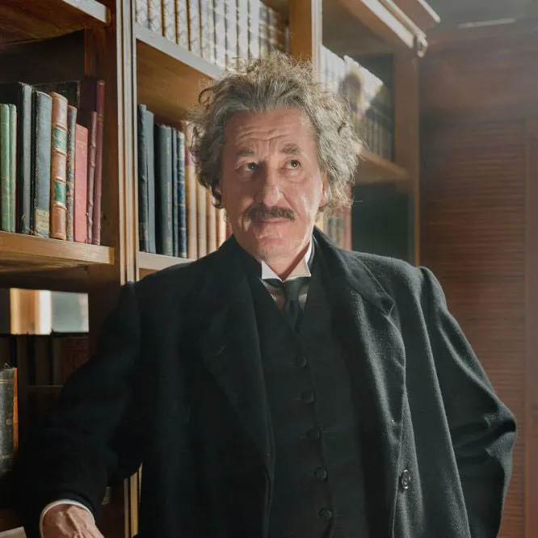

ALBERT EINSTEIN
ABOUT
Albert Einstein, born on March 14, 1879, in Ulm, Germany, and passing away on April 18, 1955, in Princeton, New Jersey, USA, was a celebrated theoretical physicist. He is universally recognized as one of the most brilliant physicists in history. Einstein's most prominent achievement was his groundbreaking work on the theory of relativity. His famous equation, E=mc^2, derived from this theory, is often hailed as "the world's most famous equation," showcasing the profound link between mass and energy.
EXPERIENCES
- Albert Einstein was the first scientist to propose that light exhibited both wave-like and particle-like properties.
- He was awarded the Nobel Prize in Physics in 1921 for his significant work on the photoelectric effect.
- Einstein traveled extensively around the world, delivering lectures and raising funds for the establishment of Hebrew University in Jerusalem.
- From 1933 to 1955, he held the position of Professor of Theoretical Physics at the Institute for Advanced Study in Princeton.
- In 1944, Einstein handwrote his 1905 theory on relativity and allowed it to be auctioned, ultimately selling for six million dollars. He donated this sum to support the efforts to win World War II.
IMAGE COLLECTION



HOBBIES
- Writing novels
- Reading and Philosophy
- Social and Political Activism
- Travelling
- Solving Puzzles and Thought Experiments
Books
Read More
For All the information, click the link below
Link for The Book Library
BLOGS
- Throughout the day, I often come to the awareness of how profoundly my daily existence, both externally and internally, is constructed upon the efforts of my fellow human beings, both those currently alive and those who have passed on. This realization prompts me to recognize the need for sincere and diligent efforts on my part to reciprocate by contributing as much as I've benefited from others.
- Converting this into a vibrant and well-defined awareness may be the primary objective of education.